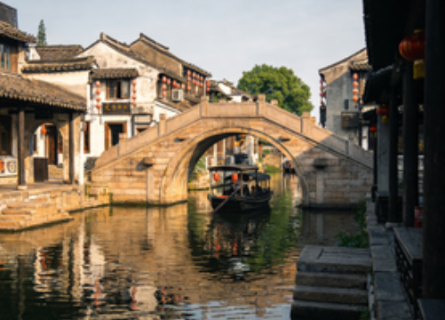

Natural Scenery of Jiaxing

Nanhu Lake
Nanhu Lake is the iconic landmark of Jiaxing and a national 5A-level tourist attraction. Spanning approximately 624 mu of water surface, it is divided into east and west lakes shaped like mandarin ducks entwined neck-to-neck, hence the alias "Mandarin Duck Lake." The lake features famous scenic spots such as Misty Rain Tower and the Red Boat. Its rippling blue waters and lush surrounding greenery perfectly blend natural beauty with revolutionary cultural heritage.

Xitang Water Town
Xitang is one of the six great ancient towns of Jiangnan, boasting a millennium of history. The entire town is built along the river, with nine waterways converging in the town center to form eight islands, all connected by 24 stone bridges. Preserving a complete collection of Ming and Qing dynasty architecture, its covered corridors stretch for miles, showcasing the gentle and elegant beauty of Jiangnan water towns.

Wuzhen
Wuzhen is among the first batch of National Famous Historical and Cultural Towns, divided into East Gate (Dongzha) and West Gate (Xizha) scenic areas. The Beijing-Hangzhou Grand Canal flows through the town, with waterways crisscrossing and dwellings built along the water. With white walls, dark-tiled roofs, small bridges, and flowing streams, it perfectly presents the original charm of Jiangnan water towns. It is also the permanent venue for the World Internet Conference.

Qixing Lake
Qixing Lake is located in the Xiuzhou District of Jiaxing and serves as an important ecological wetland in northern Jiaxing. With vast expanses of water and dense surrounding vegetation, it is a vital habitat for birds and aquatic life. The clear waters and picturesque scenery make it an ideal destination for citizens to relax, vacation, and connect with nature.

Hangzhou Bay Coastline
The southern part of Jiaxing borders Hangzhou Bay, boasting a long coastline and rich coastal resources. The Nanbeihu Lake in Haiyan integrates mountains, sea, and lake into one landscape, making it one of the first batch of provincial-level scenic areas in Zhejiang and the only panoramic mountain-sea-lake resort destination in China.

Tianping Lake
Tianping Lake is located in Pinghu City, Jiaxing, and is an important urban lake surrounded by lakeside greenways and leisure parks. With its clear waters and open vistas, it serves as a key venue for Pinghu residents to enjoy daily leisure, fitness, and sightseeing, showcasing the achievements of Jiaxing's urban ecological development.
Characteristics of Jiaxing's Natural Landscape
Situated in the Hangjiahu Plain, Jiaxing features flat terrain with a dense network of rivers. Water bodies account for 12.1% of the city's total area, forming a distinctive water town pattern of "a bay every nine li, a stream every ten li." The city is home to over 13,000 rivers of various sizes and numerous lakes, primarily including Nanhu Lake, Donghu Lake, Nanbeihu Lake, and Fenhu Lake, together constituting a unique Jiangnan water town ecosystem.
The natural landscapes of Jiaxing are centered around water town characteristics while encompassing diverse landforms including plains, wetlands, and coastal areas. Each season reveals a different beauty: golden rapeseed flowers in spring, lotus leaves in summer, rolling rice paddies in autumn, and elegant snowscapes in winter. Meanwhile, Jiaxing emphasizes ecological conservation, having established multiple wetland parks and nature reserves to achieve a harmonious balance between economic development and environmental protection.